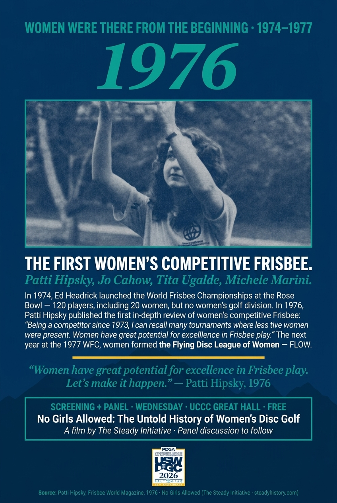
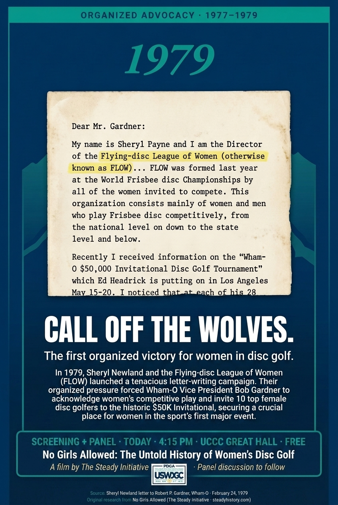
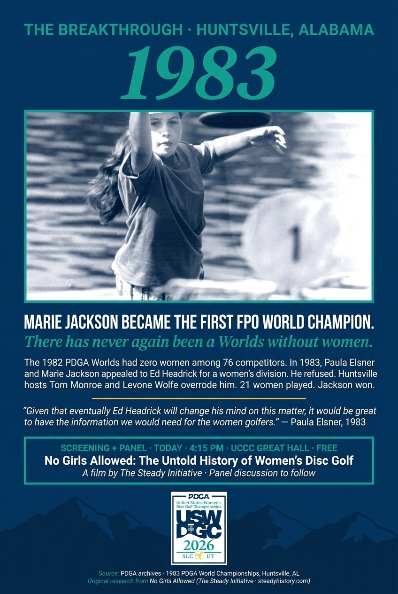
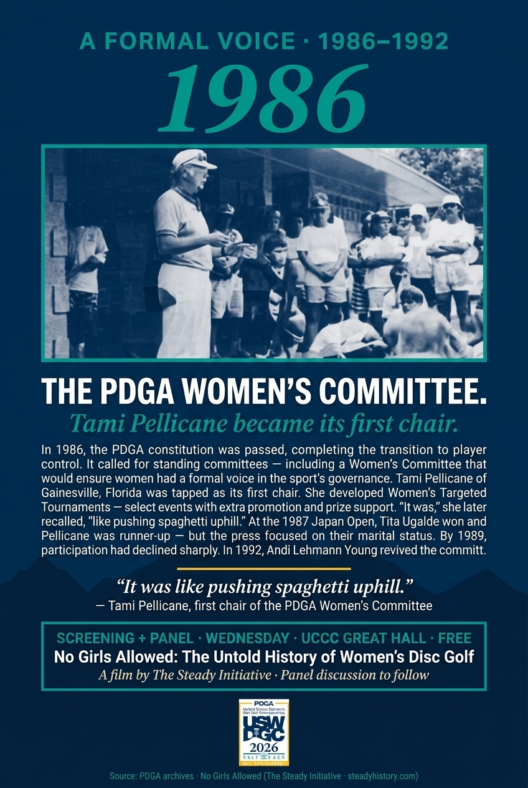
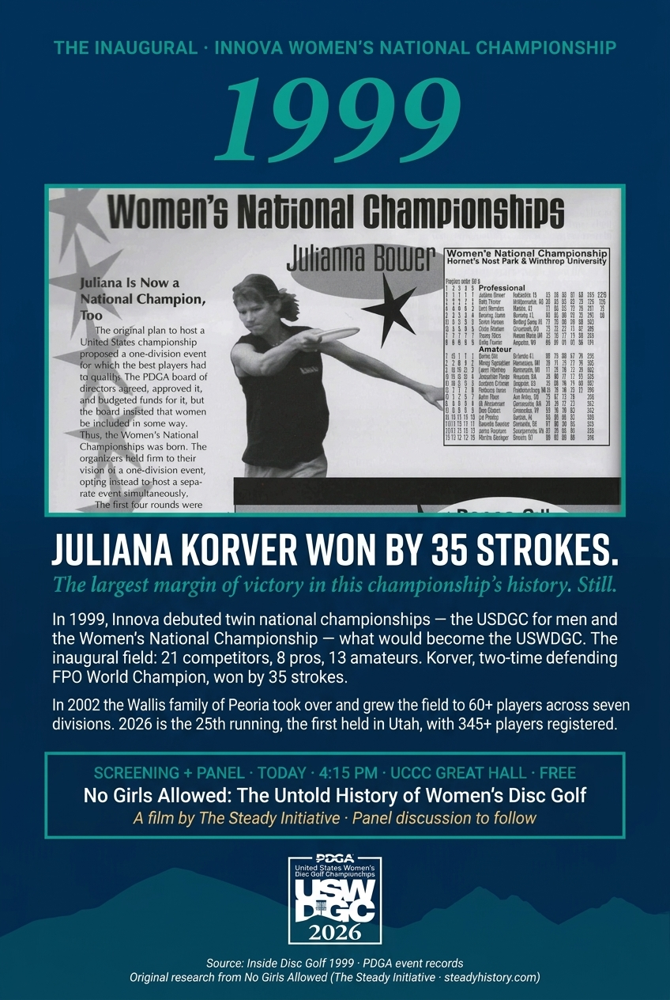
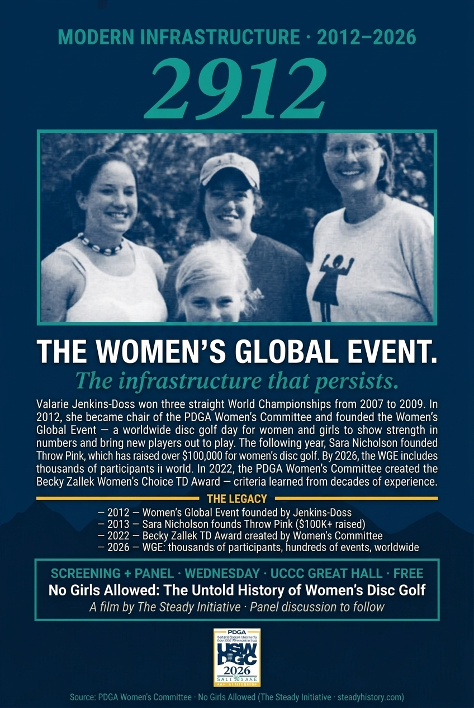
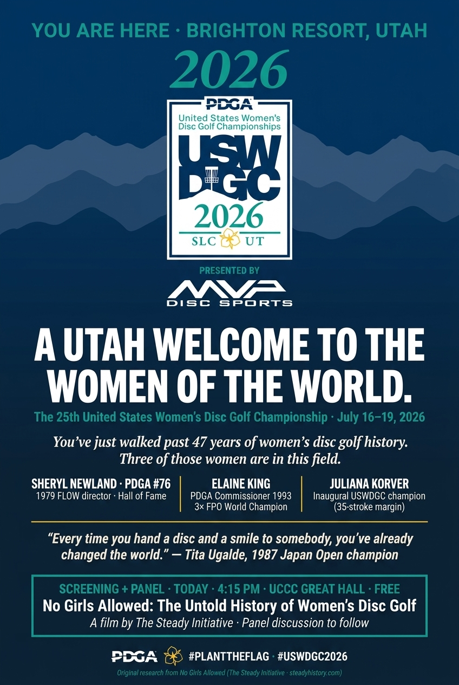

Seven poster panels at registration, anchored by the Delicate Arch.
Six pivotal moments in the history of women's disc golf, plus a Utah welcome.
Seven 24"x36" vertical posters in the registration area at the Utah Cultural Celebration Center, alongside the 12'x13' Delicate Arch centerpiece. Players, families, sponsors, and press will pass through this space throughout opening weekend.
Every poster image in this deck was assembled with AI image generation as a way to communicate intent — composition, hierarchy, and the narrative arc of the panel system. They are not press-ready.
We're showing our work transparently. Treat what follows as a concept brief, not a finished design.
| Year | Pivotal moment | Living subject |
|---|---|---|
| 1976 | Women turn out for the WFC — Tita Ugalde, Michele Marini, Patti Hipsky, Jo Cahow. The title image for No Girls Allowed. | Tita Ugalde · Michele Marini (both confirmed attending) |
| 1979 | Sheryl Newland's FLOW campaign forces Wham-O to invite women to the $50K Invitational. "Call off the wolves." | Sheryl Newland · PDGA #76 |
| 1983 | Marie Jackson becomes the first FPO World Champion at Huntsville after hosts override Headrick. | — |
| 1986 | The PDGA constitution establishes a permanent Women's Committee. Tami Pellicane becomes its first chair. | — (Pellicane status TBD) |
| 1999 | Juliana Korver wins the inaugural USWDGC by 35 strokes — still the largest margin in the championship's history. | Juliana Korver · FP50 |
| 2012 | Valarie Jenkins-Doss founds the Women's Global Event. Thousands of women worldwide. The infrastructure that persists. | — |
| 2026 | The welcome — a Utah welcome to the women of the world. | All five above |

Patti Hipsky's 1976 article. Jo Cahow as 2x champion. Tita Ugalde and Michele Marini confirmed at USWDGC 2026 — the living proof that this history belongs to people still in the field.

The first organized victory for women in disc golf. Hero artifact: Sheryl Newland's actual February 24, 1979 letter to Bob Gardner.

Hosts Tom Monroe and Levone Wolfe overruled Headrick's one-division policy. 21 women played. Jackson won. There has never again been a Worlds without women.

The 1986 PDGA constitution established standing committees — including a Women's Committee with Tami Pellicane as first chair. Her framework of Women's Targeted Tournaments proved that grassroots outreach worked.

The largest margin of victory in this championship's history. Still. Hero artifact: the actual 1999 magazine spread with Juliana Bower at the top of the inaugural scorecard.

Valarie Jenkins-Doss founded the WGE in 2012 — a worldwide disc golf day for women and girls. By 2026, thousands of participants in hundreds of events across the globe. The infrastructure that persists.

You've just walked past 50 years of women's disc golf history. Five of those women — Sheryl Newland, Tita Ugalde, Michele Marini, Juliana Korver, and Elaine King — are in the field this week. Presented by MVP Disc Sports.
USWDGC 2026 is screening No Girls Allowed: The Untold History of Women's Disc Golf + a panel discussion during opening weekend. The synthesis behind these panels draws directly from that documentary's research.
We're proposing the check-in display run as a co-presentation with The Steady Initiative. Every panel carries an "Original research from No Girls Allowed" credit beneath the USWDGC mark.
MOU / formal agreement — terms of engagement between the LOC and The Steady Initiative, covering attribution, asset usage, and post-event retention.
Check-in presence — Steady Initiative merch and media sales at the registration area alongside the display.
Steady Initiative branding — co-presentation credit on every panel, with the USWDGC mark and "Original research from No Girls Allowed" attribution.
Asset retention post-event — agreement on who retains the physical panels and digital assets after USWDGC 2026.
PDGA Women's Committee coordination — alignment with the Committee on historical accuracy, panelist selection, and credit language.
Expanded panelist roster — up to 8 panelists for the Friday screening discussion, with dual moderators.
Licensed archival photography — through Steady's source materials (PDGA archives, Disc Golfer Magazine, Inside Disc Golf, FLOW newsletter scans, primary correspondence) for the photo slots across all historical panels.
Matt's feedback has been received and the 7-panel arc is confirmed. The project now moves to two parallel tracks: formalizing the Steady Initiative partnership (MOU, asset terms, panelist roster) and handing off to a designer for final art.
The mockups are the conversation, not the deliverable. The designer is the deliverable.
Questions, feedback, redirects — all welcome. We'd rather rebuild this with you than ship it without you.